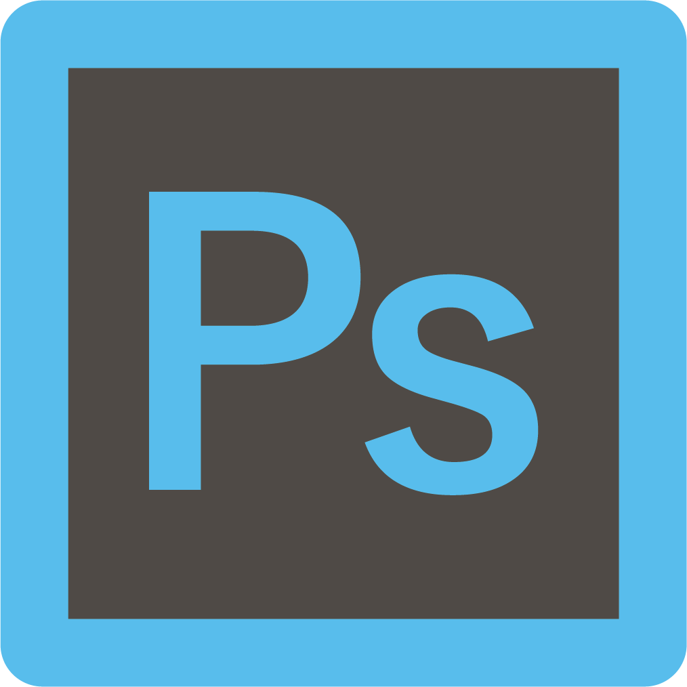
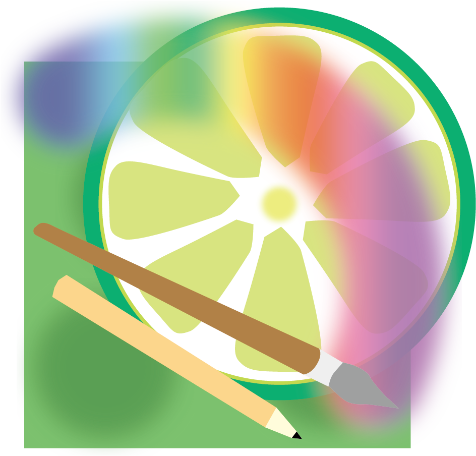
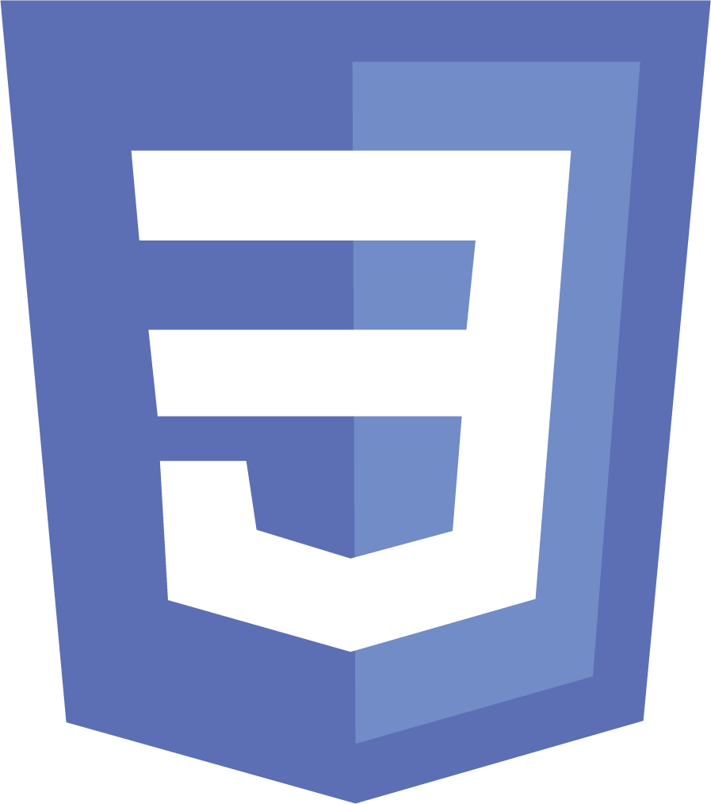
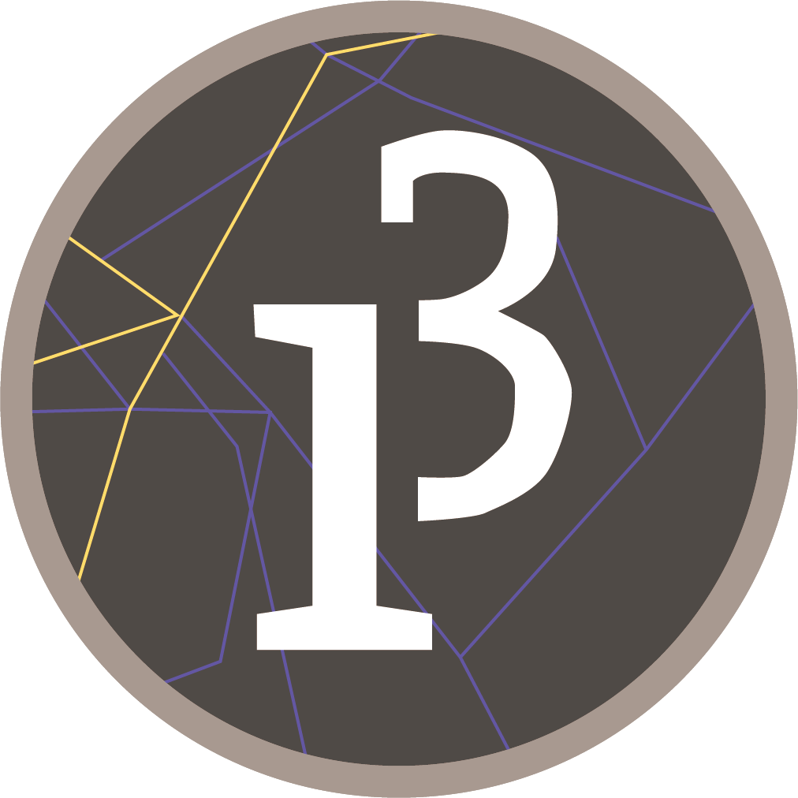
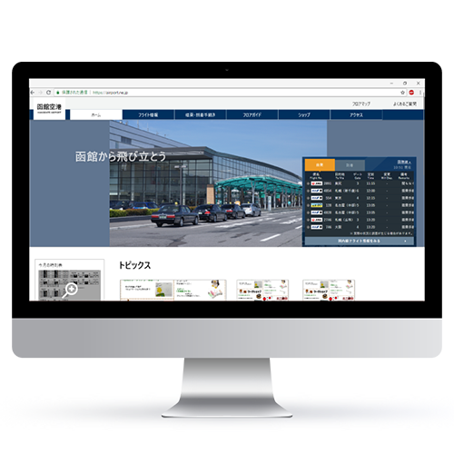
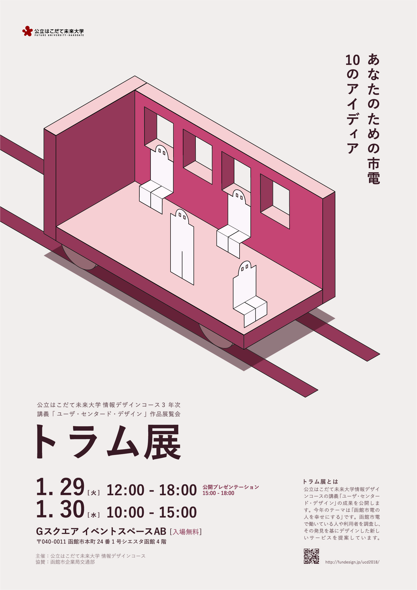

Kinoshita Yui's
Portfolio
Profile
公立はこだて未来大学 システム情報科学部情報
アーキテクチャ学科
情報デザインコース ３年
木下 唯衣
Kinoshita Yui
はじめまして。
学校ではUI/UXデザインを学んできました。１か月前に、コーディングの楽しさに気付き、デザイン知識を生かしながらフロントエンドエンジニアとして働きたいと考えています。携わるプロジェクトのUXを意識しながら、より良いものを作り上げていきたいです。
SKILL
software
illustrator

photoshop
XD

SAI
language
HTML5

CSS3

Processing
友達に一緒にやらないかと誘われたフリーペーパー制作サークル、有志で集まって行う運営係、地域の学生同士の交流を促すプロジェクトの協力など今まで「やりたい」と言って様々なことを経験し、成長してきました。
Works

課題作品
ウェブサイト改善
ユーザビリティの向上を目的にリデザインをしました。
既存ウェブサイトを構造化し認知的問題を発見、改善策を立案しAdobe XDでモックアップを作成し、実際に評価実験を行い、ユーザビリティの向上を数値として体感しました。

個人制作
課題作品展示会
ポスター
展示会実行委員の広報担当としてメインビジュアルとなるポスターを作成しました。
市民の方がご覧になるのなので、デザイン知識がなくても展示会の内容がわかるように気を付けました。実行委員や友人、教授に表現したいことが伝わっているか繰り返し確認しながら作成しました。